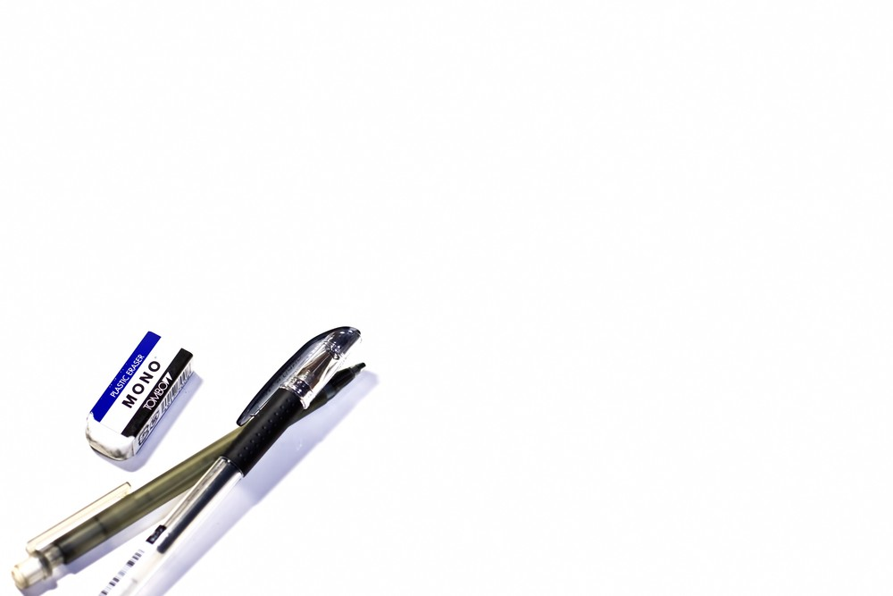

文具のアヲキ


選び抜かれた高品質な革を職人が丹念に仕上げた、丈夫で機能的なシステム手帳です。バイブルサイズは、どなたにもお使いいただけるスタンダードな大きさ。
美しさと耐久性を兼ね備えた本品は、長く使える最高のパートナーとなるでしょう。

地球儀というと、何の変哲もない商品のように思われがちですが、新しい作成法、新しいデザインを得て、非常に興味深い、おしゃれでインテリア性の高い商品になりました。

電卓です。

〒123-xxxx
東京都江戸川区小峰4-x-x
TEL：03-3633-xxxx
FAX：03-3635-xxxx
午前中に、FAXでご注文を頂けば、当日中に無料にて配送いたします。
取り扱い品目：一般事務用品、製図用品